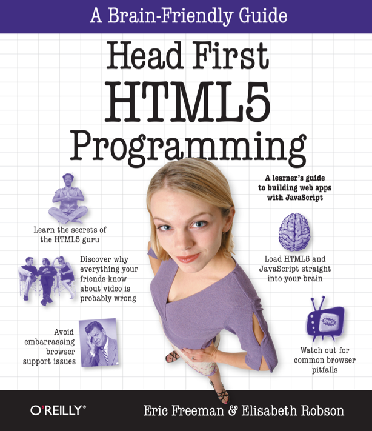

Assim como a maioria dos livros da série Head First (Use a Cabeça, no Brasil), o HTML5 Programming mostra tudo que é preciso saber sobre o assunto com excelentes metáforas e associações com casos do dia-a-dia, melhorando a aprendizagem.
Do básico de HTML5, à tópicos mais avançados envolvendo Javascript, Head First HTML5 Programming monstra os conceitos básico e como implementá-los em situações reais, com destaque para as funcionalidades de localização, armazenamento e o canvas, novo recurso gráfico do HTML5.
A didática deste livro, assim como todos os comentários nas suas seções, são muito bons. Este é o segundo livro que eu li desta série (o primeiro foi o Desenvolvendo para iPhone), e este mesmo padrão de qualidade está presente em todos os livros. Eu recomendo fortemente que os exercícios propostos sejam feitos, ajudam bastante a fixar o conteúdo proposto.
O principal item do HTML5 apresentado no livro é o canvas, e tudo que pode ser feito nele. Na minha primeira experiência com o HTML5, onde fiz este PONG, tive que estudar e entender como utilizar o canvas, pois ele é responsável por toda parte gráfica. O canvas é o lendário substituto do Flash, por que nele podemos criar animações e jogos, teoricamente tudo que também é possível fazer com o Flash, mas sem a facilidade da interface.

Este livro pode ajudar muito se você está desenvolvendo um jogo com HTML5, ou pretende apenas aprender sobre o assunto. Existem frameworks para desenvolvimento de jogos mobile como o PhoneGap e o Titianium que usam HTML5 por dentro, e você pode programar em Javascript como faria no browser.
O ebook que li foi enviado pela editora americana O’Reilly, pois ainda não existe versão em português no Brasil. Você pode comprar este e outros livros da série em sites como a Amazon, que envia livros sobre problemas para o Brasil (comprei muitos livros lá já), ou também comprar a versão digital e ler em qualquer lugar (smartphone, tablet, desktop, laptop e leitores de ebook).